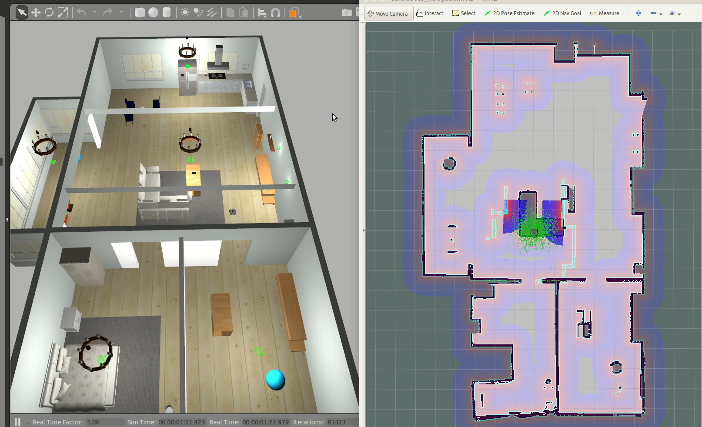

ROS / Gazebo 移动机器人自主导航
ROS / Gazebo 项目实践 · 2023.03 — 2023.04 · 仿真
A* 路径规划运行演示
来源：AStar 项目文件夹内保存的 2023 年 3 月 26 日演示录像。
项目内容
基于 ROS / Gazebo 搭建移动机器人仿真导航系统，集成 gmapping 建图、AMCL 定位与 move_base 导航，贯通环境地图构建、机器人位姿估计和目标点导航。
在占据栅格地图上实现障碍膨胀与全局路径规划，通过膨胀处理约束可通行区域，在栅格空间搜索起点至目标点的避障路径。
仿真环境
